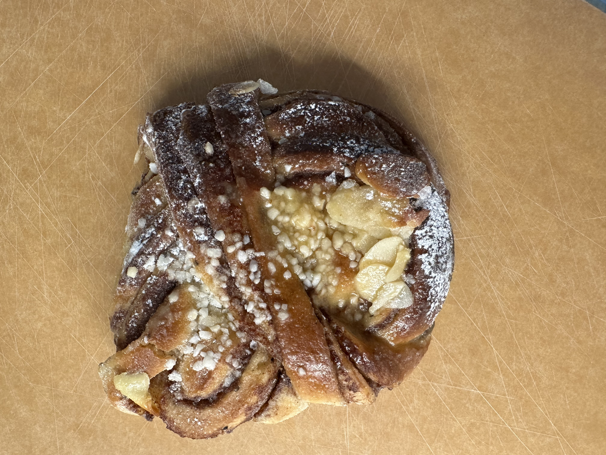

Söder är en av Stockholms absolut bästa stadsdelar för löpning. Att springa Söder runt är något som de flesta löpare som bor på södra sidan av Stockholm har gjort någon gång. Vi är många som älskar att springa runt ett Årstaviken som badar i vårsol. Eller ta en runda som avslutas med ett bad på Långholmen eller ett glas rosé på en uteservering vid Söder Mälarstrand.
Det är förmodligen därför Söder också har så många löpargrupper. Det här är min guide till några jag själv sprungit med, plus några andra värda att ha koll på. Bäst av allt, nästan alla Söders löpargrupper är gratis och alla nivåer är välkomna.
Run Collective Stockholm
Run Collective startade 2022 och är en av Söders mest etablerade run clubs. Gruppen är internationell och de flesta passen körs på engelska, men det pratas också en hel del svenska. Allt beroende på vem du springer bredvid.
Det jag gillar är att de delar in sig i olika grupper beroende på tempo. På så sätt finns det alltid en grupp som matchar din dagsform. Vill du springa snabbt kan du göra det, och vill du ta en lugnare runda och njuta av vackra omgivningar går det också toppen. På tal om vackra omgivningar var jag imponerad över hur fin runda jag fick hänga med Run Collective på. Det var ingen tillfällighet, en av Run Collectives grundare berättade för mig att rundor som låter dig som löpare upptäcka Stockholm från sin bästa sida är lite av deras grej.
Något som säger en hel del om gruppen (och min balans) är hur gulliga alla var när jag gjorde en megavurpa i en backe. Min Garminklocka började larma och medan jag febrilt försökte stänga av den märkte jag att hela gruppen hade stannat för att kolla så att allt var okej. Blir fortfarande glad när jag tänker på det.
På rundan hade jag med mig min man och min tvååring, hon sov gott i sin vagn under hela turen och vaknade lagom tills vi var tillbaka på Biscuitkonditoriet. Där bjöds det på mysigt häng och kaffe.

Svedjans Löpsällskap
En måndagsfavorit, och det perfekta sättet att starta veckan på. Svedjans bageri är välkänt som ett av stadens bästa bagerier, men vad inte alla vet är att de också har en löpargrupp. Något som flera bagerier borde ta efter, för vem vill inte kombinera fika med att springa?

Vi sprang med Svedjans Löpsällskap en måndag i maj. Det blev sju härliga kilometer längs vattnet på Södermalm. Just den här måndagen var tempot lugnt, runt 6:30 min/km, och stämningen inkluderande och varm. Svedjans pass är överlag ganska lugna, även om de varvar lite längre pass med intervaller. Du springer på dina villkor, och rundorna går ofta att anpassa efter dagsform.
Förutom sina weekly runs har Svedjans Löpsällskap också något som de kallar för Bun Runs. Under ett Bun Run kombineras löpning med bullar. Kan det bli bättre? Vi fick uppleva en miniversion av det när vi fick med oss stans godaste bulle hem.

För att sammanfatta, Svedjans Löpsällskap är hundra procent mys och bra energi. Följ dem på Instagram för att hålla dig uppdaterad: @svedjanslopsallskap
Dopest Runners (precis över bron)
Dopest Runners springer tekniskt sett inte alltid från Södermalm utan i Liljeholmen, fem minuter med tunnelbana eller en gångbro från Hornstull. Men jag tar med dem ändå, för de flesta räknar dem ändå till Söder.
Klubben grundades 2021 av bröderna Ninos och Kristian Icho, samma personer bakom magasinet Dopest. Den kopplingen märks. Här möts löpning, kultur och stadsliv på ett sätt som är ganska unikt för Stockholm. Det syns på Instagramflödet, det syns i vilka som dyker upp, och det syns i att passen har en lite festlig underton utan att man tappar fokus på själva löpningen.
Senast vi hängde med dem bjöd de på supertrevligt bemötande, bra samtal och dessutom årets bästa väder. Det är en av Stockholms populäraste löpargrupper just nu, och det är inte svårt att förstå varför.
Tre pass i veckan är generöst, och bag drop på alla av dem gör att du kan komma direkt från jobbet utan logistiskt pussel. Tempot är högt nog att utmana, men gemenskapen är öppen nog att välkomna alla.
Andra Söder-baserade klubbar värda att ha koll på
Den här guiden täcker mina tre, men det finns fler löpargrupper med start på Södermalm. Absolut värda att kolla in om någon av dem passar bättre med ditt schema:
- Triple Threshold RC, onsdagar och lördagar från Reimersholmsgatan 5. Mer fokus på strukturerad träning.
- ZLK (Zinken Löpklubb), onsdagar från Zinkensdamms IP. Klassisk gräsrotskänsla.
- Mikkeller Running Club Stockholm, utgår från Mikkellers bar på Söder. Som namnet antyder finns det en koppling till en öl efter passet.
Du hittar info om alla på respektive klubbsida på runclubs.se.
Hur väljer du rätt klubb?
Det finns inget rätt svar, och många i Söder kombinerar två eller tre olika klubbar för att få variation. Men om du börjar från noll och bara ska välja en, så är det här min snabba guide:
- Vill du ha låg tröskel och fika? → Svedjans Löpsällskap
- Vill du ha två pass i veckan och socialt häng? → Run Collective Stockholm
- Vill du springa fler gånger i veckan från samma plats? → Dopest Runners
- Vill du ha mer struktur och progression i träningen? → Triple Threshold RC
Ärligt talat tycker jag du ska testa två eller tre stycken innan du bestämmer dig. Det är gratis, det krävs ingen formell anmälan, och det enda du investerar är en kväll. Du kommer ändå hem med fler bekanta än du gick dit med.